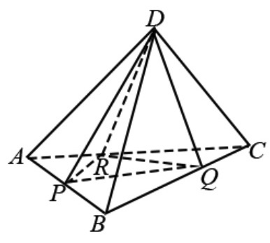
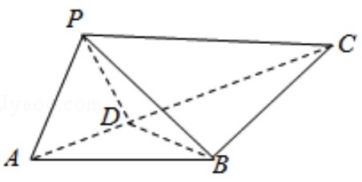
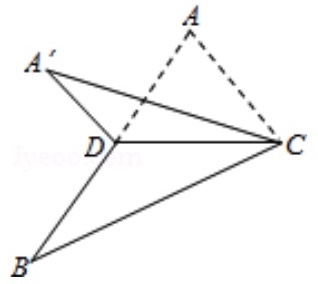
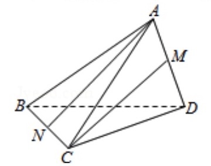
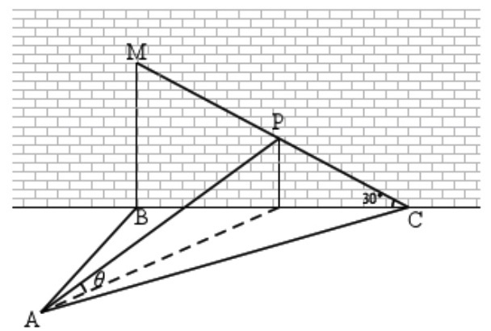
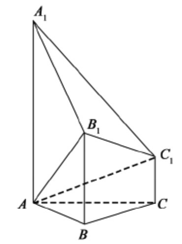
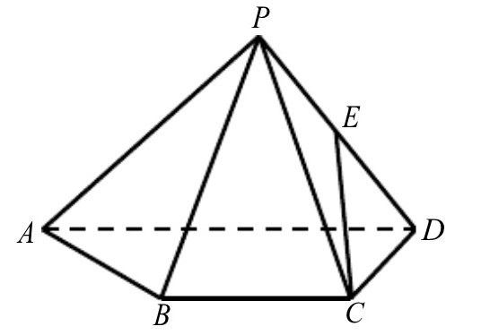
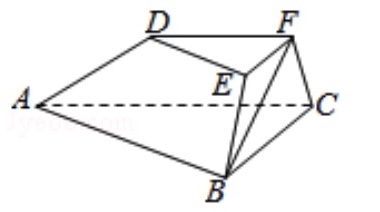
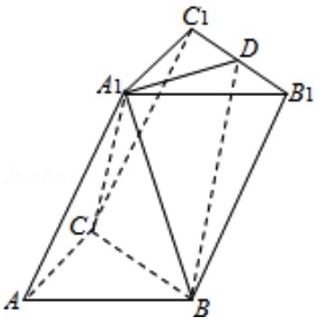
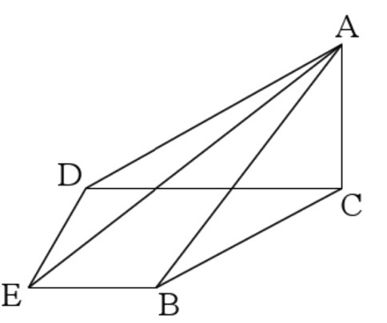

2018-浙江-理-8 【空间角】
已知四棱锥S−ABCD的底面是正方形,侧棱长均相等,E是线段AB上的点(不含端点)
设SE与BC所成的角为θ1,SE与屏幕ABCD所成的角为θ2,二面角S−AB−C的
平面角为θ3,则
A.θ1≤θ2≤θ3
B.θ3≤θ2≤θ1
C.θ1≤θ3≤θ2
D.θ2≤θ3≤θ1
2017-浙江-理-9 【空间角】
如图,已知正四面体D−ABC(所有棱长均相等的三棱锥),P,Q,R分别为AB,BC,CA上的点,
AP=PB,BQQC=CRRA=2,分别记二面角D−PR−Q,D−PQ−R,D−QR−P
的平面角为α,β,γ,则
A.γ<α<β
B.α<γ<β
C.α<β<γ
D.β<γ<α

2016-浙江-理-14 【空间角】
如图,在ΔABC中,AB=BC=2,∠ABC=120o.若平面ABC外的点P和线段AC上的点D,
满足PD=DA,PB=BA,则四面体PBCD的体积最大值是()

2015-浙江-理-8 【空间角】
如图,已知ΔABC,D是AB的中点,沿直线CD将ΔACD折成ΔA′CD,所成二面角A′−CD−B
的平面角为α,则
A.∠A′DB≤α
B.∠A′DB≥α
C.∠A′CB≤α
D.∠A′CB≥α

2015-浙江-理-13 【空间角】
如图,三棱锥A−BCD中,AB=AC=BD=CD=3,AD=BC=2,
点M,N分别是AD,BC的中点,则异面直线AN,CM所成角的余弦值是()

2014-浙江-理-17 【空间角】
如图,某人在垂直于水平地面ABC的墙面前的点A处进行射击训练.已知点A到墙面的距离为AB,
某目标点P沿墙面的射击线CM移动,此人为了准确瞄准目标点P,需要计算由点A观察点P的仰角
θ的大小.若AB=15m,AC=25m,∠BCM=30o,则tanθ的最大值是()

2018-浙江-理-19 【空间角】
如图,已知多面体ABCA1B1C1,A1A,B1B,C1C均垂直于平面ABC,∠ABC=120o,
A1A=4,C1C=1,AB=BC=B1B=2
(I)证明:AB1⊥平面A1B1C1.
(II)求直线AC1与平面ABB1所成的角的正弦值.

2017-浙江-理-19 【空间角】
如图,已知四棱锥P−ABCD,ΔPAD是以AD为斜边的等腰直角三角形,BC//AD,CD⊥AD
PC=AD=2DC=2BC,E为PD的中点
(I)证明:CE//平面PAB
(II)求直线CE与平面PBC所成角的正弦值.

2016-浙江-理-17 【空间角】
如图,在三棱台ABC−DEF中,已知平面BCFE⊥平面ABC,∠ABC=90o,
BE=EF=FC=1,BC=2,AC=3
(I)证明:BF⊥平面ACFD
(II)求二面角B−AD−F的余弦值.

2015-浙江-理-17 【空间角】
如图,在三棱柱ABC−A1B1C1中,∠BAC=90o,AB=AC=2,A1A=4,A1在
底面ABC的射影为BC的中点,D为B1C1的中点
(I)证明:A1D⊥平面A1BC
(II)求二面角A1−BD−B1的平面角的余弦值.

2014-浙江-理-20 【空间角】
如图,在四棱锥A−BCDE中,平面ABC⊥平面BCDE,∠CDE=∠BED=90o,
AB=CD=2,DE=BE=1,AC=2‾√
(I)证明:ED⊥平面ACD
(II)求二面角B−AD−E的大小.
